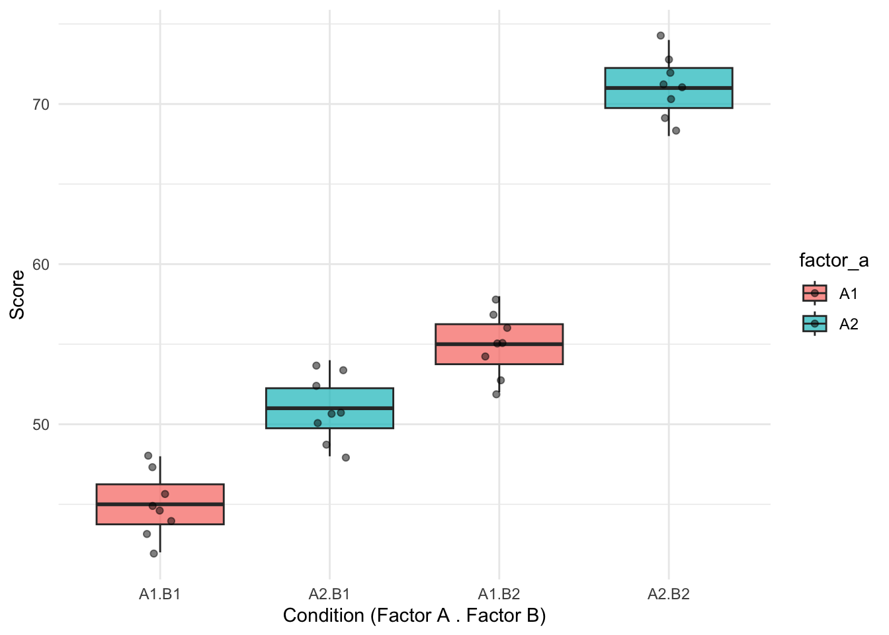

library(tidyverse)
library(effectsize)
library(emmeans)
library(afex) # For nice ANOVA outputBoil in the Bag: Factorial ANOVA (2x2)
Two between-subjects factors with interaction
Overview
Use this template when: You have two categorical independent variables (between-subjects) and want to test their main effects and interaction on a continuous outcome.
Example scenarios: - Treatment (drug vs placebo) × Gender (male vs female) - Condition (A vs B) × Age group (young vs old) - Framing (positive vs negative) × Information (present vs absent)
Step 1: Setup
Step 2: Load Your Data
# CHANGE THIS: Replace with your data file
data <- read_csv("data/factorial_anova_data.csv")
glimpse(data)Rows: 32
Columns: 6
$ id <dbl> 1, 2, 3, 4, 5, 6, 7, 8, 9, 10, 11, 12, 13, 14, 15, 16, 17, 18…
$ age <dbl> 21, 22, 20, 23, 21, 22, 20, 24, 21, 22, 20, 23, 21, 22, 20, 2…
$ gender <dbl> 1, 2, 1, 2, 1, 2, 1, 2, 1, 2, 1, 2, 1, 2, 1, 2, 1, 2, 1, 2, 1…
$ factor_a <chr> "A1", "A1", "A1", "A1", "A1", "A1", "A1", "A1", "A1", "A1", "…
$ factor_b <chr> "B1", "B1", "B1", "B1", "B1", "B1", "B1", "B1", "B2", "B2", "…
$ score <dbl> 42, 45, 44, 47, 43, 46, 48, 45, 52, 55, 54, 57, 53, 56, 58, 5…Step 3: Define Your Variables
# CHANGE THESE to your variable names
factor_a <- "factor_a" # First IV (between-subjects)
factor_b <- "factor_b" # Second IV (between-subjects)
outcome_var <- "score" # DV (continuous)
# Convert to factors
data <- data |>
mutate(
across(all_of(c(factor_a, factor_b)), as.factor)
)
cat("Factor A levels:", levels(data[[factor_a]]), "\n")Factor A levels: A1 A2 cat("Factor B levels:", levels(data[[factor_b]]), "\n")Factor B levels: B1 B2 Step 4: Descriptive Statistics
# Cell means
descriptives <- data |>
group_by(.data[[factor_a]], .data[[factor_b]]) |>
summarise(
n = n(),
mean = mean(.data[[outcome_var]], na.rm = TRUE),
sd = sd(.data[[outcome_var]], na.rm = TRUE),
se = sd / sqrt(n),
.groups = "drop"
)
print(descriptives)# A tibble: 4 × 6
factor_a factor_b n mean sd se
<fct> <fct> <int> <dbl> <dbl> <dbl>
1 A1 B1 8 45 2 0.707
2 A1 B2 8 55 2 0.707
3 A2 B1 8 51 2 0.707
4 A2 B2 8 71 2 0.707# Marginal means for Factor A
data |>
group_by(.data[[factor_a]]) |>
summarise(mean = mean(.data[[outcome_var]]), sd = sd(.data[[outcome_var]]))# A tibble: 2 × 3
factor_a mean sd
<fct> <dbl> <dbl>
1 A1 50 5.51
2 A2 61 10.5 # Marginal means for Factor B
data |>
group_by(.data[[factor_b]]) |>
summarise(mean = mean(.data[[outcome_var]]), sd = sd(.data[[outcome_var]]))# A tibble: 2 × 3
factor_b mean sd
<fct> <dbl> <dbl>
1 B1 48 3.65
2 B2 63 8.49Visualise: Interaction Plot
ggplot(descriptives, aes(x = .data[[factor_a]], y = mean,
color = .data[[factor_b]], group = .data[[factor_b]])) +
geom_point(size = 3) +
geom_line(linewidth = 1) +
geom_errorbar(aes(ymin = mean - se, ymax = mean + se), width = 0.1) +
labs(
x = "Factor A",
y = "Mean Score",
color = "Factor B",
title = "Interaction Plot"
) +
theme_minimal()
Visualise: Box Plots
ggplot(data, aes(x = interaction(.data[[factor_a]], .data[[factor_b]]),
y = .data[[outcome_var]],
fill = .data[[factor_a]])) +
geom_boxplot(alpha = 0.7) +
geom_jitter(width = 0.1, alpha = 0.5) +
labs(
x = "Condition (Factor A . Factor B)",
y = "Score"
) +
theme_minimal()
Step 5: Check Assumptions
Normality per Cell
data |>
group_by(.data[[factor_a]], .data[[factor_b]]) |>
summarise(
shapiro_p = shapiro.test(.data[[outcome_var]])$p.value,
.groups = "drop"
)# A tibble: 4 × 3
factor_a factor_b shapiro_p
<fct> <fct> <dbl>
1 A1 B1 0.975
2 A1 B2 0.975
3 A2 B1 0.975
4 A2 B2 0.975Homogeneity of Variance
library(car)
leveneTest(as.formula(paste(outcome_var, "~", factor_a, "*", factor_b)), data = data)Levene's Test for Homogeneity of Variance (center = median)
Df F value Pr(>F)
group 3 0 1
28 Step 6: Run the Factorial ANOVA
Using Base R
anova_model <- aov(
as.formula(paste(outcome_var, "~", factor_a, "*", factor_b)),
data = data
)
summary(anova_model) Df Sum Sq Mean Sq F value Pr(>F)
factor_a 1 968 968 242 2.62e-15 ***
factor_b 1 1800 1800 450 < 2e-16 ***
factor_a:factor_b 1 200 200 50 1.08e-07 ***
Residuals 28 112 4
---
Signif. codes: 0 '***' 0.001 '**' 0.01 '*' 0.05 '.' 0.1 ' ' 1Using afex (nicer output with effect sizes)
anova_afex <- aov_ez(
id = "id",
dv = outcome_var,
data = data,
between = c(factor_a, factor_b)
)
# Nice summary table
nice(anova_afex)Anova Table (Type 3 tests)
Response: score
Effect df MSE F ges p.value
1 factor_a 1, 28 4.00 242.00 *** .896 <.001
2 factor_b 1, 28 4.00 450.00 *** .941 <.001
3 factor_a:factor_b 1, 28 4.00 50.00 *** .641 <.001
---
Signif. codes: 0 '***' 0.001 '**' 0.01 '*' 0.05 '+' 0.1 ' ' 1Step 7: Effect Sizes
eta <- eta_squared(anova_model)
print(eta)# Effect Size for ANOVA (Type I)
Parameter | Eta2 (partial) | 95% CI
-------------------------------------------------
factor_a | 0.90 | [0.83, 1.00]
factor_b | 0.94 | [0.90, 1.00]
factor_a:factor_b | 0.64 | [0.45, 1.00]
- One-sided CIs: upper bound fixed at [1.00].Step 8: Post-Hoc Comparisons
Simple Effects (if interaction is significant)
emm <- emmeans(anova_model, specs = c(factor_a, factor_b))
# Simple effects of Factor A at each level of Factor B
pairs(emm, by = factor_b)factor_b = B1:
contrast estimate SE df t.ratio p.value
A1 - A2 -6 1 28 -6.000 <0.0001
factor_b = B2:
contrast estimate SE df t.ratio p.value
A1 - A2 -16 1 28 -16.000 <0.0001# Simple effects of Factor B at each level of Factor A
pairs(emm, by = factor_a)factor_a = A1:
contrast estimate SE df t.ratio p.value
B1 - B2 -10 1 28 -10.000 <0.0001
factor_a = A2:
contrast estimate SE df t.ratio p.value
B1 - B2 -20 1 28 -20.000 <0.0001Main Effect Comparisons (if main effects significant)
# Factor A marginal means
emmeans(anova_model, specs = factor_a) |> pairs() contrast estimate SE df t.ratio p.value
A1 - A2 -11 0.707 28 -15.556 <0.0001
Results are averaged over the levels of: factor_b # Factor B marginal means
emmeans(anova_model, specs = factor_b) |> pairs() contrast estimate SE df t.ratio p.value
B1 - B2 -15 0.707 28 -21.213 <0.0001
Results are averaged over the levels of: factor_a Step 9: Summary of Results
anova_table <- summary(anova_model)[[1]]
cat("=== FACTORIAL ANOVA RESULTS ===\n\n")=== FACTORIAL ANOVA RESULTS ===cat("CELL MEANS:\n")CELL MEANS:print(descriptives)# A tibble: 4 × 6
factor_a factor_b n mean sd se
<fct> <fct> <int> <dbl> <dbl> <dbl>
1 A1 B1 8 45 2 0.707
2 A1 B2 8 55 2 0.707
3 A2 B1 8 51 2 0.707
4 A2 B2 8 71 2 0.707cat("\nANOVA TABLE:\n")
ANOVA TABLE:cat(sprintf(" %s: F(%d, %d) = %.2f, p = %.3f, η² = %.3f\n",
factor_a,
anova_table$Df[1], anova_table$Df[4],
anova_table$`F value`[1], anova_table$`Pr(>F)`[1],
eta$Eta2[1])) factor_a: F(1, 28) = 242.00, p = 0.000, η² = 0.896cat(sprintf(" %s: F(%d, %d) = %.2f, p = %.3f, η² = %.3f\n",
factor_b,
anova_table$Df[2], anova_table$Df[4],
anova_table$`F value`[2], anova_table$`Pr(>F)`[2],
eta$Eta2[2])) factor_b: F(1, 28) = 450.00, p = 0.000, η² = 0.941cat(sprintf(" %s × %s: F(%d, %d) = %.2f, p = %.3f, η² = %.3f\n",
factor_a, factor_b,
anova_table$Df[3], anova_table$Df[4],
anova_table$`F value`[3], anova_table$`Pr(>F)`[3],
eta$Eta2[3])) factor_a × factor_b: F(1, 28) = 50.00, p = 0.000, η² = 0.641Step 10: APA Write-Up Template
NoteAPA Format
A 2 × 2 between-subjects ANOVA was conducted to examine the effects of [FACTOR A] and [FACTOR B] on [OUTCOME].
There was a [significant/non-significant] main effect of [FACTOR A], F(1, XX) = XX.XX, p = .XXX, η² = .XX.
There was a [significant/non-significant] main effect of [FACTOR B], F(1, XX) = XX.XX, p = .XXX, η² = .XX.
The interaction between [FACTOR A] and [FACTOR B] was [significant/non-significant], F(1, XX) = XX.XX, p = .XXX, η² = .XX.
[If interaction significant:] Simple effects analysis revealed that [describe the pattern of the interaction].